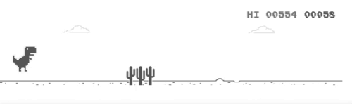
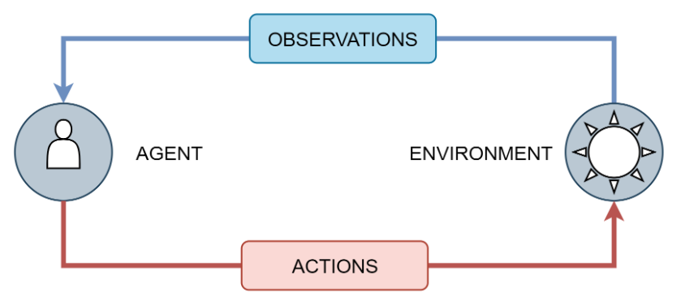

Reinforcement Learning and Video Games
强化学习技术在游戏场景下的实践与应用
Created by Yue Zheng from University of Sheffield
摘要
强化学习在游戏AI领域通过深度学习方法已超越人类水平，DeepMind关于围棋和雅达利游戏的实验就是证明。深度学习解决了多年来阻碍强化学习发展的高维输入问题。本研究结合这两种技术，创建了几种不同算法的智能体，成功学会了玩T-rex Runner游戏。实现了深度Q网络算法及其三种改进类型以训练智能体。其中一些结果虽不尽人意，但其他一些则优于人类专家。批量归一化是解决深度神经网络内部协变量偏移问题的方法。本研究也证明了它对强化学习的积极影响。
目录
- 项目目的及介绍
- 预备知识
- 实现方法
- 实验结果及讨论
- 结论及未来展望
1.项目目的及介绍
背景、目的、概述
游戏介绍
T-rex Runner是一款来自Google Chrome离线模式的恐龙游戏。玩家的目标是逃离所有障碍并获得更高的分数,直到达到极限
项目目的
该项目的目的是创建一个使用不同算法的智能体来玩T-rex Runner并比较它们的性能。
- 创建智能体来玩 T-rex Runner
- 比较不同强化学习算法之间的差异
- 研究批量归一化在强化学习中的作用
2.预备知识
深度学习、神经网络、激活函数、反向传播算法、卷积神经网络、批量规范化
强化学习、马尔可夫决策过程、贝尔曼方程、探索和利用、TDL时序差分学习、Deep Q网络
深度学习
深度学习是一类基于人工神经网络（ANN）的机器学习模型。近年来广泛应用的深度学习模型有两种。递归神经网络就是其中之一，它在自然语言处理中展示了它的强大功能。另一个在深度强化学习中起着重要作用，称为卷积神经网络 （CNN）。它是计算机视觉问题（如物体检测和图像分类）最有效的模型之一。本节简要介绍了深度学习以及卷积神经网络的详细信息。
深度神经网络和激活函数
神经网络或多层感知器由三个主要组件组成：输入层、隐藏层和输出层。一层中的每个单元称为神经元。输入数据被馈入输入层，通过隐藏层中的权重进行线性变换。最后，通过激活函数将结果赋予非线性能力，并馈送到输出层。
批量规范化
With the increasing depth of the neural network, the training time becomes longer. One of the reason is the distribution of input in each layer changes when updating the weight which is called Internal Covariate Shift. In 2015, Ioffe proposed Batch Normalization (BN) which make the distribution in each layer more stable and achieve shorter training time [15]. In each neuron, the input can be normalized by Equation
强化学习
强化学习 （RL） 是一类机器学习，旨在在做出决策时获得最大的奖励信号。强化学习的基本组成部分是智能体和环境。如图 2.7 所示，智能体将在每次操作后收到来自环境的反馈，包括观察和奖励。为了产生更好的政策，它将不断与环境互动，并逐步提高其决策能力，直到政策趋同。
2.Slides
Not a coder? Not a problem. There's a fully-featured visual editor for authoring these, try it out at https://slides.com.
Point of View
Press ESC to enter the slide overview.
Hold down the alt key (ctrl in Linux) and click on any element to zoom towards it using zoom.js. Click again to zoom back out.
(NOTE: Use ctrl + click in Linux.)
Touch Optimized
Presentations look great on touch devices, like mobile phones and tablets. Simply swipe through your slides.
Fragments
Hit the next arrow...
... to step through ...
... a fragmented slide.
Fragment Styles
There's different types of fragments, like:
grow
shrink
fade-out
fade-right, up, down, left
fade-in-then-out
fade-in-then-semi-out
Highlight red blue green
Transition Styles
You can select from different transitions, like:
None -
Fade -
Slide -
Convex -
Concave -
Zoom
Themes
reveal.js comes with a few themes built in:
Black
(default) -
White -
League -
Sky -
Beige -
Simple
Serif -
Blood -
Night -
Moon -
Solarized
Slide Backgrounds
Set data-background="#dddddd" on a slide to change the background color. All CSS color formats are
supported.
Image Backgrounds
<section data-background="image.png">Tiled Backgrounds
<section data-background="image.png" data-background-repeat="repeat" data-background-size="100px">Video Backgrounds
<section data-background-video="video.mp4,video.webm">... and GIFs!
Background Transitions
Different background transitions are available via the backgroundTransition option. This one's called "zoom".
Reveal.configure({ backgroundTransition: 'zoom' })Background Transitions
You can override background transitions per-slide.
<section data-background-transition="zoom">Iframe Backgrounds
Since reveal.js runs on the web, you can easily embed other web content. Try interacting with the page in the background.
Pretty Code
import React, { useState } from 'react';
function Example() {
const [count, setCount] = useState(0);
return (
<div>
<p>You clicked {count} times</p>
<button onClick={() => setCount(count + 1)}>
Click me
</button>
</div>
);
}
Code syntax highlighting courtesy of highlight.js.
Marvelous List
- No order here
- Or here
- Or here
- Or here
Fantastic Ordered List
- One is smaller than...
- Two is smaller than...
- Three!
Tabular Tables
| Item | Value | Quantity |
|---|---|---|
| Apples | $1 | 7 |
| Lemonade | $2 | 18 |
| Bread | $3 | 2 |
Clever Quotes
These guys come in two forms, inline: The nice
thing about standards is that there are so many to choose from
and block:
“For years there has been a theory that millions of monkeys typing at random on millions of typewriters would reproduce the entire works of Shakespeare. The Internet has proven this theory to be untrue.”
Intergalactic Interconnections
You can link between slides internally, like this.
Speaker View
There's a speaker view. It includes a timer, preview of the upcoming slide as well as your speaker notes.
Press the S key to try it out.
Export to PDF
Presentations can be exported to PDF, here's an example:
Global State
Set data-state="something" on a slide and "something"
will be added as a class to the document element when the slide is open. This lets you
apply broader style changes, like switching the page background.
State Events
Additionally custom events can be triggered on a per slide basis by binding to the data-state name.
Reveal.addEventListener( 'customevent', function() {
console.log( '"customevent" has fired' );
} );
Take a Moment
Press B or . on your keyboard to pause the presentation. This is helpful when you're on stage and want to take distracting slides off the screen.
Much more
- Right-to-left support
- Extensive JavaScript API
- Auto-progression
- Parallax backgrounds
- Custom keyboard bindings